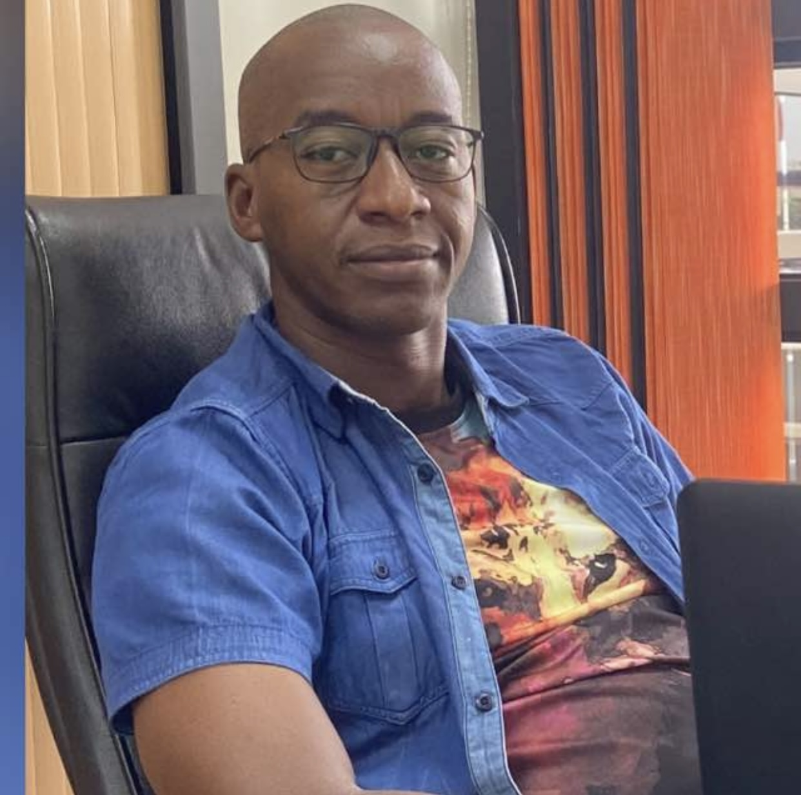
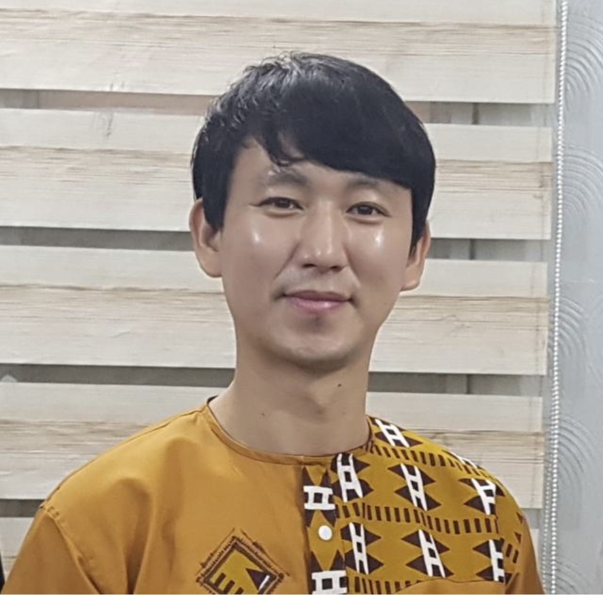

Développeur web et mobile, UI & UX Designer
Hilaire Daliwa est un jeune leader passionné des métiers du numérique. Il est un jeune dynamique, polyvalent, relationnel et ayant le sens de l'écoute.
Création des sites web dynamique en utilisant les langages HTML5/CSS, Javascript, PHP et Mysql.
Université - Technolab-ISTA
Durée - 3ans [2018 à 2020]
Lieu - Bamako Mali
Obtention d'un DUT dans le domaine de l'intelligence artificielle et la biologie des organismes animaux
Université - Université de N'Gaoundéré
Durée - 2ans [2014 à 2016]
Lieu - N'Gaoundéré Cameroun
Obtention d'un Baccalauréat en Sciences Expérimentales et Technologie Informatique.
Lycée - Lycée Bilingue de Maga
Durée - 7 ans [2008 à 2014]
Location - Douala Cameroun
Certification en Business et Marketing Digital du programme Alibaba eFounder Fellowship
Company - Alibaba Business School
Durée - 3 mois [Novembre 2020-Jan 2021]
Lieu - NGouanzou - China
Lauréat du programme Yali Dakar, programme des Etats Unis pour soutenir les jeunes leaders.
Company - YALI Dakar
Duration - 1Mois [ JAN à FEV]
Lieu - Dakar - Sénégal
Certification obtenue en Business et Entrepreneurship. Programme financé par l'USAID.
Company - CESAG
Duration - 1Mois [JAN à FEV]
Lieu - Dakar Sénégal
je suis un jeune très dynamique
et donc polyvalent en vous offrant plusieurs de mes expériences acquises auprès des grandes entreprises locales et internationales.
Développment de plusieurs applications web et mobile des projets concrets basée sur la pédagogie active et la méthode agile.
Company - Orange Digital Center
Durée - 6 Mois [Août 2021 à Février 2022]
Lieu - Bamako, Mali
Développement des sites webs, des sites e-commerces, des blog. Mise sur pieds des plateformes scolaires et Webdesign.
Company - ZedaxLink
Duration - 2 ans [2019 à 2021]
Lieu - Bamako, Mali
Formateur de plusieurs jeunes en entreprenariat, en developpement des affaires et business plan et la recherche des financements.
Company - ONG IYF
Duration - 4 ans [2017 à 2021]
Lieu - Bamako, Mali
Développement des sites web e-commerce et dynamique et mise à jour des informations en utilisant WordPress et Prestashop
Company - SUPERTECH
Duration - 2 Mois [Juillet à Septembre 2019]
Lieu - Dakar Sénégal
Formateur de plusieurs jeunes en Mind Education et changement de mentalité. Formation en leadership et entreprenariat.
Company - ONG IYF
Duration - 1 an [2019]
Lieu - Bamako, Mali
Community manager auprès de Canal+, publication digitale et rédaction des articles pour les réseaux sociaux et intégrateur web.
Company - CANAL+
Duration - 9 mois [Janvier à Septembre 2018]
Lieu - Bmako, Mali
Responsable de la première école de code Orange Digital Kalanso formant les jeunes en développement web et mobile et sur les métiers du numérique en général.
Kaou Diallo
Direceteur Orange digital Kalanso
+223 76299574
Coordinateur de l'ONG IYF au Mali, une ONG en charge de la formation et l'encadrement des jeunes en changement de mentalité et en leadership.
Mun Seong Kwang
Coordinateur ONG IYF
+223 66989038
Disponible immédaitement je reste ouvert
à tous recommandations de votre part et vous garantie une satisfaction totale de mes services.
+223 83092295
hilairedaliwa2@gmail.com
www.zedaxlink.com